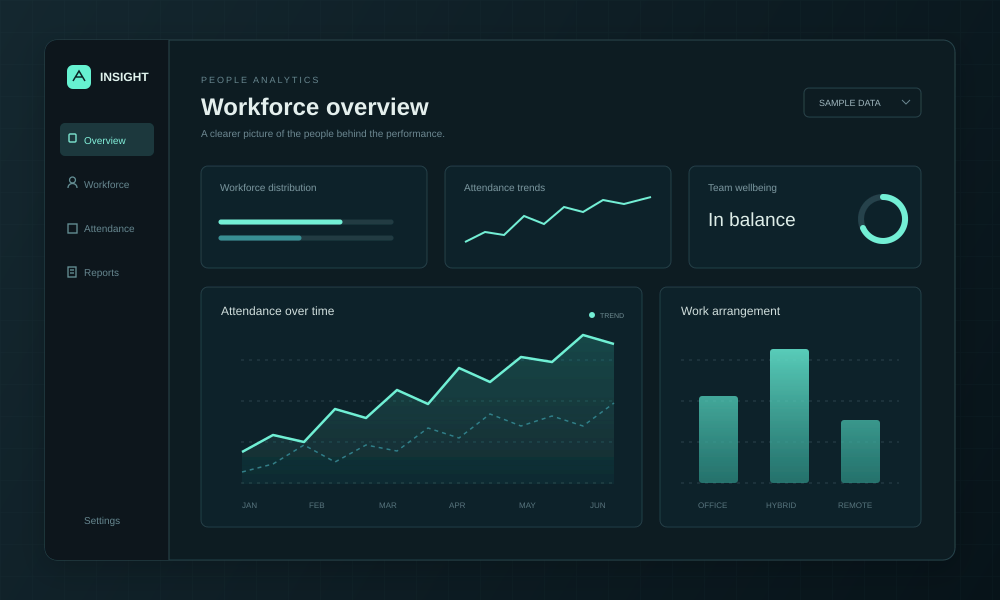
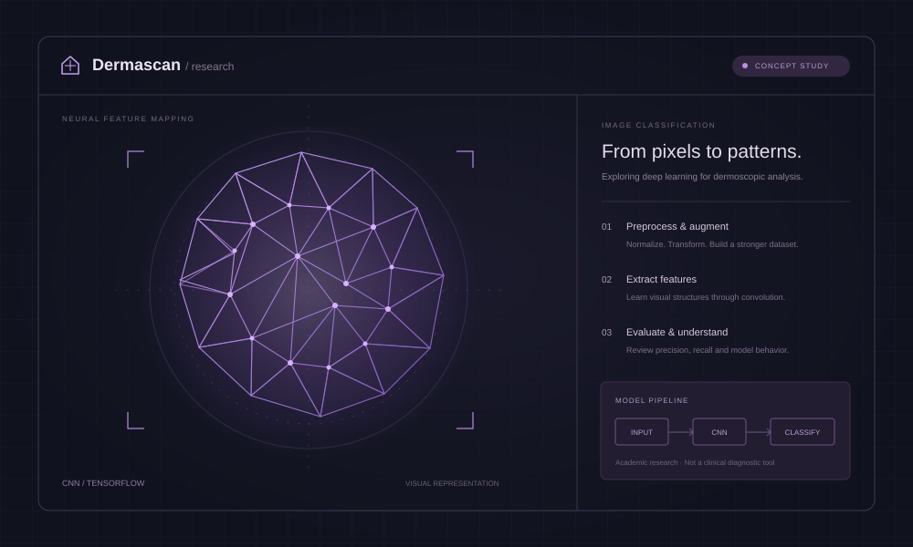
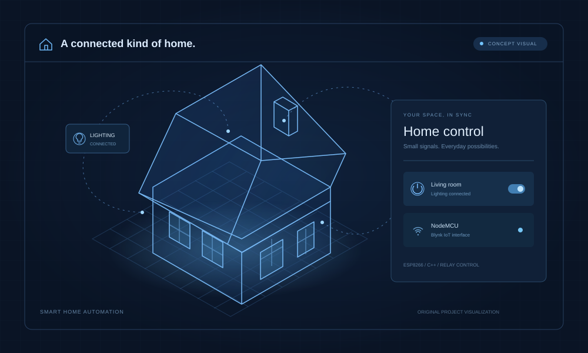

Software & Business Intelligence Analyst
Safecare Technology · Sharjah, UAE
DATA & BUSINESS INTELLIGENCE
I’m Fayaz. I make sense of complex data.
Then help people do
something useful with it.
Currently connecting
data & people at
Safecare.
Three explorations in people, health, and
connected systems. Select one to look inside.

CONCEPT VISUALWork preferences, sick leave, and workload. An exploration of the patterns behind workforce productivity.

CONCEPT VISUALA CNN research project classifying dermoscopic images, with a focus on preprocessing and careful evaluation.

CONCEPT VISUALAn IoT prototype linking smartphone controls, manual switches, and real-time device status.
What changes when you look at work arrangements differently? Try a view and follow the pattern.
Illustrative cohort: 40 people, 20 workdays per month. Not client or research results. Designed to show how I think about a question.
This sample shows variation across six months. Change the arrangement or metric to explore.
A QUESTION → A VIEW → A BETTER CONVERSATION
A computer science foundation.
A curiosity that doesn’t
switch off.
I’m a data analyst and business intelligence professional based in the UAE. I like working where technical systems meet real people—and turning the complicated bits into something clear.
At Safecare Technology, that means Power BI dashboards, reliable reporting, healthcare integrations, and helping clients make systems work for them. I’ve worked across requirements, migration, validation, training, and go-live.
The full story, on paperyears connecting
data & decisions
healthcare client
integrations
faster decision-making
cycles
Safecare Technology · Sharjah, UAE
Code Lab Systems · Mangalore, India
P.A College of Engineering · VTU
The other half is knowing what to ask.
Here’s how the
pieces connect.
I turn business requirements into useful KPIs, data models, and dashboards that technical and non-technical teams can work with.
KPI dashboards and stakeholder reporting.
Google Data Analytics Microsoft Power BI PwC & Accenture analytics simulations
A data challenge, a new opportunity,
or a conversation
worth having.
I’d like to hear it.